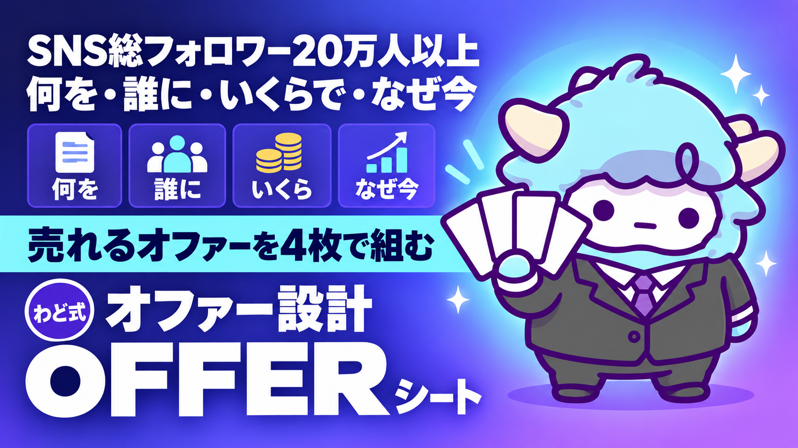

オファー設計ワークシート
『何を・誰に・いくらで・なぜ今』を4枚で埋める
このページが特典の本体です。下へスクロールして使ってくださいオファー設計ワークシート
このワークシートを4枚埋めると、「何を・誰に・いくらで・なぜ今」が誰にでも伝わる1枚のオファーになります。今日中に1枚目を埋めるところまで一緒にやりましょう。
はじめに
わどです。この特典は、あなたが今取り組んでいる商品・サービス・案件を「オファー」として整理するためのワークシートです。
オファーとは、値段表のことではありません。「何を・誰に・いくらで・なぜ今」の4つが噛み合って、初めて相手に「欲しい」と思ってもらえる形になります。この4つのうち1つでも空欄のまま値段だけ決めてしまうと、大抵は売れません。売れない理由が「文章が下手だから」だと思い込んでしまう人が多いのですが、実際は文章の前の設計が決まっていないだけのことがほとんどです。
このワークシートは、NotebookLMやチャットのAIに読み込ませて、質問に答えながら一緒に埋めていく前提で作っています。1人で悩んで空欄を見つめる必要はありません。
この特典の進め方
- まず「最初のゴール」だけをやってください。全部を一度に埋めようとしなくて大丈夫です。
- ワークシート4枚を上から順番に埋めます。順番を守ってください。「いくらで」を先に決めると、あとの3つが歪みます。
- 迷ったら「記入例」を見て、自分の言葉に置き換えます。コピーしても意味がありません。
- 4枚が埋まったら「できたオファーの検算」で確認します。ここで引っかかったら、値段ではなく設計に戻ります。
最初のゴール（今日やる1つ）
今日やることは1つだけです。
シート1「何を」の1問目だけ、思いつくままに3行書く。
「自分が人に提供できることは何か」を、うまい言葉にしなくていいので、思いついた順に3行書いてください。ここが埋まっていないと、この先の3枚は組み立てられません。書けたら次の章に進んでください。
1. オファーの4要素をつかむ
オファーは「何を・誰に・いくらで・なぜ今」の4つでできています。この4つは順番も大事です。
| 要素 | 問い | 順番が大事な理由 |
|---|---|---|
| 何を | 相手が受け取ったあと、何ができるようになるか | ここが曖昧だと残り3つが全部ぶれる |
| 誰に | どんな状態の人に向けたものか | 「何を」が決まって初めて相手の輪郭が見える |
| いくらで | 何に対して対価を受け取るか | 相手の得る価値が見えて初めて決められる |
| なぜ今 | なぜ後回しにせず今動く理由があるか | 前の3つが決まって初めて言える。前の3つが甘いと「今だけ」を煽り文句にしてしまう |
「何を」は機能ではなく変化で書く
「動画編集を教えます」ではなく「編集にかかる時間が半分になる」のように、相手の状態がどう変わるかで書きます。機能の説明は、あとで詳細ページに回せば十分です。
「誰に」は「半歩先」の人を狙う
ターゲットを考えるとき、多くの人は「初心者」か「もう詳しい人」のどちらかに寄せてしまいます。どちらも外しやすいターゲットです。
- 何も知らない人に売ろうとすると、そもそも必要性を感じてもらえない
- すでに詳しい人に売ろうとすると、「もう知ってる」で終わる
いちばん反応が良いのは、「言葉は知っているけれど、自分の中でまだ答えが出ていない人」です。「なんとなく分かってはいるけど、自分の場合どうすればいいか分からない」という状態の人を指します。この特典ではこれを「半歩先の人」と呼びます。誰に向けているかを1人の実在に近い人物像で書くと、この後の文章がすべて楽になります。
「いくらで」は先に金額を決めない
値段は、相手が受け取る価値の大きさから逆算するものであって、自分がかけた時間から計算するものではありません。「何時間かかったから◯円」という考え方をすると、どうしても安くなります。「これを受け取ることで相手にどんな変化が起きるか」を先に言葉にしてから、金額の欄に向き合ってください。
このワークシートでは金額そのものの記入例は空欄にしています。相場は自分の商品・市場に合わせて別途調べて埋めてください。
「なぜ今」は焦らせるためのものではない
「なぜ今」は、煽り文句を作る欄ではありません。相手にとって「先延ばしにするコスト」が実際に存在するかどうかを確認する欄です。存在しないなら、無理に書かなくて構いません。存在しないのに「今だけ」と書くと、信頼を損ないます。
2. ワークシート4枚（そのまま使えます）
そのまま埋めてください。空欄にはあなたの言葉を書きます。
シート1: 何を（提供するものの定義）
| 設問 | 記入欄 | 記入例 |
|---|---|---|
| 1. 受け取った人は、何ができるようになるか | 副業のはじめの一歩を、迷わず今週中に踏み出せるようになる | |
| 2. その変化が起きる前と後で、何が具体的に変わるか | 「何から手をつければいいか分からない」状態から「今日やることが1つに決まっている」状態になる | |
| 3. これを提供するために、自分が持っている経験・強みは何か | 自分自身が同じところで半年つまずいた経験と、そこを抜けた手順 | |
| 4. 機能・特徴を3つ挙げるなら何か（あとで詳細ページに使う） | ・毎日の作業手順表 ・進捗の確認方法 ・つまずいたときの相談先 | |
| 5. これは「情報」か「一緒にやる伴走」か「代わりにやる代行」のどれに近いか | 一緒にやる伴走に近い |
シート2: 誰に（半歩先のターゲット像）
| 設問 | 記入欄 | 記入例 |
|---|---|---|
| 1. 相手は今、何をしていて、何につまずいているか | 副業を始めようと情報は集めているが、手を動かせていない | |
| 2. 相手は「何を」の必要性をどれくらい自覚しているか（知らない/なんとなく知っている/よく知っている） | なんとなく知っている | |
| 3. 相手が今まで試して、うまくいかなかったことは何か | 無料の記事や動画を見ても、次の日には忘れて動けていない | |
| 4. 相手がこの先も動かなかった場合、半年後どうなっていそうか | 「今年もやろうと思って終わった」を繰り返している | |
| 5. 相手を1人の人物として書くなら、どんな人か（年齢・状況・口ぐせなど） | 30代・会社員・「時間ができたらやる」が口ぐせ |
シート3: いくらで（価格の考え方)
価格は数字を先に決める欄ではありません。数字を決める前の3問に答えてから、最後に金額の欄を埋めてください。金額そのものは空欄にしてあります。相場は自分で確認してから記入してください。
| 設問 | 記入欄 | 記入例 |
|---|---|---|
| 1. 相手が自力でこれを解決しようとしたら、何を失うか（時間・機会・お金） | 独学で遠回りしていた期間、他の作業に使えたはずの時間 | |
| 2. 同じ悩みを解決する他の手段には、どんな選択肢があるか（本・独学・他の講座など） | 独学の本、無料のSNS情報、他の有料講座 | |
| 3. その中で、自分が提供するものにしかない価値は何か | 自分専用に伴走してもらえること、つまずいた時にすぐ聞けること | |
| 4. 対価は何に対して受け取るか（成果物・時間・伴走期間のどれか） | 伴走期間と、迷ったときに相談できる安心感 | |
| 5. 価格帯（円） | 例: 円（自分の市場・実績に応じて確認のうえ記入） |
シート4: なぜ今（今動くべき理由）
| 設問 | 記入欄 | 記入例 |
|---|---|---|
| 1. 相手が今このタイミングを逃すと、実際に何が起きるか | また「そのうちやる」に戻ってしまう | |
| 2. 今なら使える環境・状況はあるか（人数・期間・タイミングなど、実在するもの) | 一緒に始める仲間がいる期間中である | |
| 3. その理由は、自分が作っているものか、それとも本当に存在するものか | 本当に存在する（募集期間が決まっている） | |
| 4. 「なぜ今」を1文にするとどうなるか | 一緒に一歩目を踏み出す人がいる今だからこそ、動きやすい | |
| 5. その1文は、誰かに話して恥ずかしくないか(自問) | 恥ずかしくない。事実に基づいている |
3. 記入例（架空の1人分・4枚とも埋めた状態)
ここでは架空の人物「ゆうきさん」の記入例を通しで載せます。ゆうきさんは会社員で、AIを使った副業に興味はあるものの、まだ何も始められていない設定です。この人物は説明のための架空例であり、実在の誰かを指すものではありません。
シート1: 何を - 受け取った人は何ができるようになるか: 「何から始めればいいか分からない」状態を抜けて、今週中に最初の一歩を実行できるようになる - 変化の前後: 前は情報を集めるだけで止まっていた。後は毎日やることが1つに絞られている - 自分の強み: 同じところで半年つまずいた経験があり、そこを抜けた手順を知っている - 機能3つ: 毎日の作業手順表／進捗の確認方法／つまずいたときの相談先 - 情報か伴走か代行か: 伴走に近い
シート2: 誰に - 今の状態: 情報収集はしているが手を動かせていない - 自覚度: なんとなく知っている - 過去に試したこと: 無料記事・動画。次の日には忘れている - 半年後の予測: 「今年もやろうと思って終わった」を繰り返す - 人物像: 30代会社員。「時間ができたらやる」が口ぐせ
シート3: いくらで - 自力で失うもの: 遠回りする期間、他に使えたはずの時間 - 他の選択肢: 独学の本、無料のSNS情報、他の有料講座 - 自分にしかない価値: 自分専用の伴走、つまずいた時にすぐ聞ける安心感 - 対価の対象: 伴走期間と相談できる安心感 - 価格帯: 例: 円（相場は自分で調べて記入する）
シート4: なぜ今 - 今を逃すと起きること: また「そのうちやる」に戻る - 今使える環境: 一緒に始める仲間がいる期間中 - 理由の出どころ: 本当に存在する事実(募集期間が決まっている) - 1文にすると: 一緒に一歩目を踏み出す人がいる今だからこそ、動きやすい - 恥ずかしくないか: 事実に基づいているので問題ない
4. AIに4枚を埋めさせるプロンプト（全文）
自分の言葉が出てこないときは、以下のプロンプトをそのままAI（ChatGPT／Gemini／Claudeのどれでも構いません)に貼り付けてください。質問形式で1問ずつ聞き返してくれます。
あなたはオファー設計の壁打ち相手です。
これから私が提供したい商品・サービスについて、
「何を・誰に・いくらで・なぜ今」の4つのシートを一緒に埋めてください。
進め方のルール:
1. 一度に全部聞かない。1問ずつ聞いて、私の回答を待つ。
2. 私の回答が抽象的なときは「具体的にはどんな場面ですか」と聞き返す。
3. 「誰に」を聞くときは、実在しそうな1人の人物像まで掘り下げる。
4. 「いくらで」は、金額を聞く前に「相手が自力でやったら何を失うか」
「他にどんな選択肢があるか」「自分にしかない価値は何か」の順で聞く。
金額の具体的な相場は私が別途調べるので、AIから断定的な金額を提示しない。
5. 「なぜ今」は、事実として存在する理由だけを扱う。
作り話や誇張になりそうな理由が出たら指摘する。
6. 4つのシートが全部埋まったら、最後に「できたオファーの検算」として
以下の5つを確認する。
・誰の顔も思い浮かばない書き方になっていないか
・変化ではなく機能の説明で止まっていないか
・値段が先に決まって、価値の説明があとから付いていないか
・「今だけ」の理由が、実際には存在しない作られた理由になっていないか
・4枚の内容が矛盾していないか(例: 誰にで初心者向けと書きながら
いくらでは上級者向けの金額になっている、など)
以下、私の商品・サービスについての情報です。
[ここに自分の商品・サービスについて分かっていることを書く。
思いつく範囲でよい]
上記のルールに沿って、シート1「何を」の1問目から質問を始めてください。
5. できたオファーの検算（売れない兆候5つ）
4枚が埋まったら、以下の5つを確認してください。1つでも当てはまったら、その章に戻って書き直します。値段を下げて解決しようとしないでください。
-
誰の顔も思い浮かばない 「誰に」の欄を読んで、具体的な1人が思い浮かばないなら、まだ広すぎます。
-
機能の説明で止まっている 「何を」が「〜を教えます」「〜を作ります」で終わっていて、相手の変化が書かれていないなら書き直します。
-
値段が先に決まっている 「いくらで」の金額を先に決めてから、あとで理由をこじつけていないか確認します。理由が先、金額はあとです。
-
「今だけ」の理由が作り話になっている 期間や人数を、根拠なく「今だけ」にしていないか確認します。事実として存在しない理由は、遅かれ早かれ見抜かれます。
-
4枚の内容が矛盾している 「誰に」で書いた人物と、「いくらで」で想定している相手が違う人になっていないか確認します。矛盾があると、文章にしたときに読み手が違和感を覚えます。
最初に投げるプロンプト
まだ何も整理できていない状態から始めたいときは、次の短いプロンプトから会話を始めてください。
私は今、副業として何かを提供したいと考えていますが、
まだ「何を提供するか」がはっきり決まっていません。
今できること・興味があること・人から褒められたことを
3つ聞き出してから、それをもとに提供できそうなものの案を
3つ出してください。
ここで出てきた案の中から1つを選んで、シート1に進んでください。
よくある失敗 7つと直し方
-
値段から決めてしまう 直し方: シート3の1〜4問目を埋めてから、最後に金額欄を埋める順番を守る。
-
ターゲットを「みんな」にしてしまう 直し方: シート2の5問目で、実在しそうな1人の人物像まで具体化する。
-
機能の羅列で終わる 直し方: シート1の1問目と2問目を先に埋めて、変化を主語にする。
-
「今だけ」を演出のために作ってしまう 直し方: シート4の3問目で、理由が事実かどうかを自問する。事実でなければ書かない。
-
1人で全部埋めようとして止まる 直し方: 「4. AIに4枚を埋めさせるプロンプト」を使い、質問形式で引き出してもらう。
-
記入例をそのままコピーしてしまう 直し方: 記入例は形を見るためのもの。自分の言葉に置き換えてから次に進む。
-
検算をせずに公開してしまう 直し方: 「5. できたオファーの検算」を必ず通してから、文章化・LP化に進む。
安全に使うための注意
- このワークシートは、オファーの設計を整理するためのものです。作った内容だけで成果や収益を保証するものではありません。
- 「なぜ今」の欄には、事実として確認できる理由だけを書いてください。存在しない期間限定や人数限定を作り出すと、相手の信頼を損ないます。
- 価格の記入は空欄にしています。金額は自分の商品・実績・市場の相場を確認したうえで、自分の責任で決めてください。
- 他者の商品や実績を、確認なく自分のものとして書かないでください。
つまずいたときに聞くプロンプト
今、オファー設計ワークシートの[シート名]で止まっています。
止まっている理由は[書けない/自信がない/決められない など]です。
止まっている箇所の状況を整理する質問を3つだけ、
1問ずつ聞いてください。私が答えたら、次の質問に進んでください。
用語集
| 用語 | 意味 |
|---|---|
| オファー | 何を・誰に・いくらで・なぜ今、の4つが揃った提案のこと。値段表そのものではない |
| 半歩先の人 | 言葉は知っているが、自分の場合の答えがまだ出ていない状態の人 |
| 認識変化 | 相手が「自分の課題はこれだったんだ」と自分で気づく状態になること |
| 期待値調整 | 入口で作った期待を、企画や商品の中身できちんと回収する設計のこと |
| バリューベース価格 | かけた時間ではなく、相手が受け取る価値の大きさをもとに価格を決める考え方 |
出す前の品質チェック（10項目）
- シート1「何を」が、機能ではなく変化の言葉で書けているか
- シート2「誰に」が、実在しそうな1人の人物像まで具体化されているか
- シート3「いくらで」が、金額より先に価値の理由を埋めているか
- シート4「なぜ今」が、事実に基づいた理由だけになっているか
- 4枚を通して読んだときに、矛盾している箇所がないか
- 「誰にでも」「絶対に」といった断定的な表現を使っていないか
- 実在しない期間限定・人数限定を作っていないか
- 記入例をそのまま写しただけの箇所が残っていないか
- 価格の記入欄に、根拠のない金額を書いていないか
- 「できたオファーの検算」5項目をすべて確認したか
最新AI（2026年9月時点）でこの特典はどう変わるか
この特典では: ワークシートの答えを AI に渡して「反論役」をさせると、価格や約束の甘さがその場で見つかります。モデルの新しさより、渡す情報の量で精度が決まります。
2026年9月の第1週に、主要な AI が続けて更新されました。この特典の手順は変わりませんが、次の3点を知っておくと手数が減ります（2026年9月6日時点の公開情報です。提供状況は変わるので、使う前に各社の公式サイトで確かめてください）。
- GPT-6 Astra（OpenAI・2026年9月3日発表）: 画面の情報を読み取り、アプリを人間と同じ画面経由で動かす「コンピュータ操作」が主機能になりました。フォーム入力・表計算・資料づくりのような「手順が決まっている作業」を任せやすくなります。ただし段階的な提供の途中で、自分のアカウントにまだ出ていないことがあります。画面に映った文章をそのまま指示として読むことがあるので、AI に画面を触らせるときは「映すものを選ぶ」を守ってください。
- Claude Fable 5.1（Anthropic・2026年9月1日発表）: 数時間から数日にわたる、複数アプリをまたぐ作業を最小限の監督で回すための最上位モデルです。この特典の作業は Sonnet／Opus で足ります。「何日もかかる仕事を丸ごと任せる」段階になってから検討してください。Claude Code の導入は特典「Claude Code 最初の30分」で扱っています。
- AI社員: 上の2つが向いている先は同じです。「毎回同じ指示を書かなくていい担当」を1人ずつ増やす形が、個人でも現実になりました。この特典のプロンプトやシステム指示は、そのまま AI社員の「指示書」の1枚になります。つくり方は特典「AI社員1人目のつくり方」で扱っています。
モデルの差で成果は決まりません。何に使うかで決まります。この特典の手順を1周してから、新しいモデルを試してください。
最終チェックリスト
- [ ] 「最初のゴール」の3行を書いた
- [ ] シート1〜4を、自分の言葉で最後まで埋めた
- [ ] 記入例をコピーしただけの箇所がない
- [ ] 「できたオファーの検算」5つをすべて確認した
- [ ] 「いくらで」の金額は、自分で相場を確認してから記入した
- [ ] 「なぜ今」の理由が、作り話になっていないか確認した
- [ ] このワークシートの内容を、次にLP文章やセミナー台本に転記する準備ができた